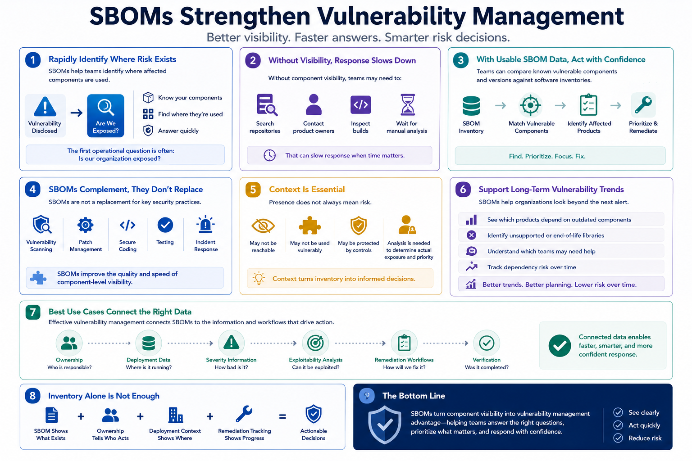

What Is SBOM?
Vulnerability Management and SBOMs
Connecting to LMS... Progress: in progress
Version 1.0 | Date: 2026-06-16 | Educational overview of Software Bill of Materials concepts.

Narration
SBOMs can strengthen vulnerability management by helping teams identify where affected components are used. When a vulnerability is disclosed, the first operational question is often whether the organization is exposed.
Without component visibility, teams may need to search repositories, contact product owners, inspect builds, or wait for manual analysis. That can slow response when time matters.
With usable SBOM data, teams can compare known vulnerable components and versions against software inventories. This can help identify affected products, prioritize investigation, and focus remediation effort.
SBOMs do not replace vulnerability scanning, patch management, secure coding, testing, or incident response. They complement those activities by improving the quality and speed of component-level visibility.
Context is still necessary. A component may be present but not reachable, not used in a vulnerable way, or protected by other controls. Teams still need analysis to determine actual exposure and response priority.
SBOMs can also support long-term vulnerability trends. Organizations can see which products depend on outdated components, where unsupported libraries remain, and which teams may need help reducing dependency risk.
The best vulnerability management use cases connect SBOMs to ownership, deployment data, severity information, exploitability analysis, remediation workflows, and verification that changes were completed.
This connection is what turns inventory into response capability. An SBOM can show that a component exists, but ownership, deployment context, and remediation tracking help the organization decide what to do next.